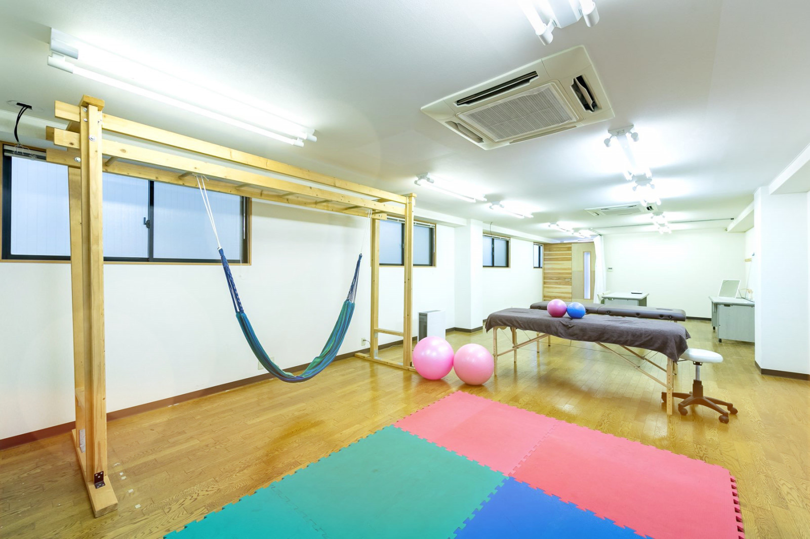
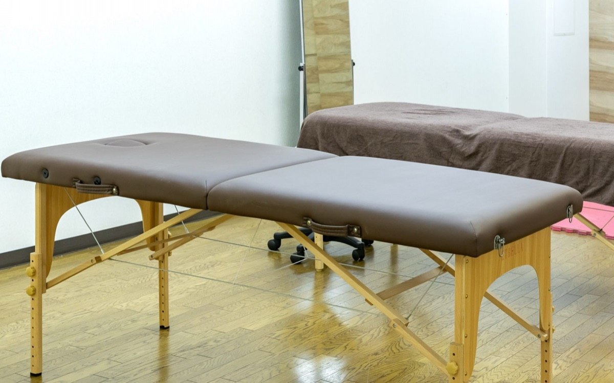
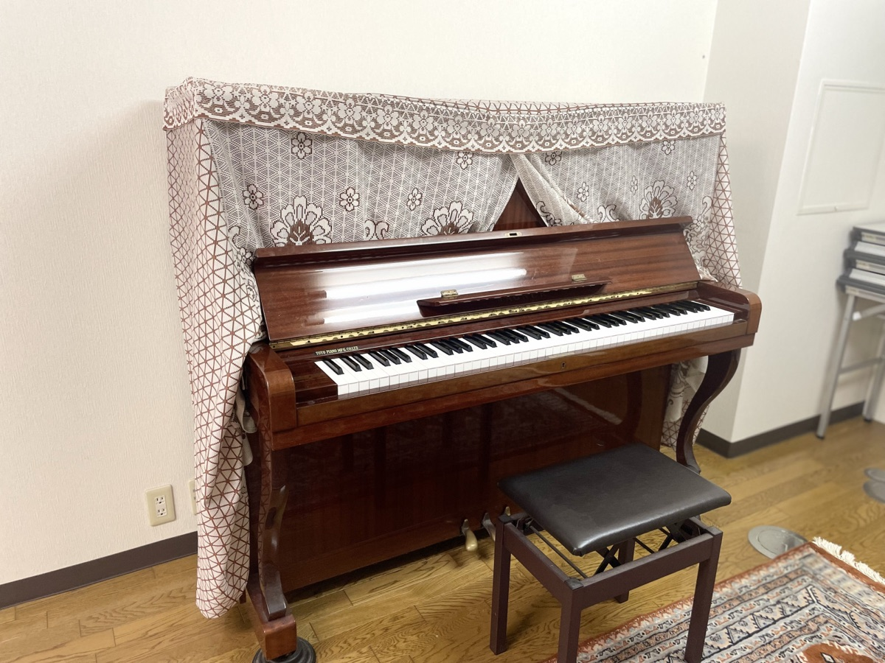
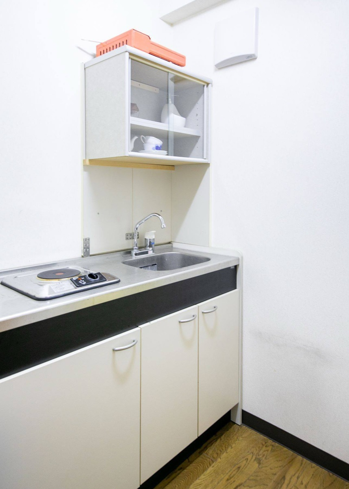
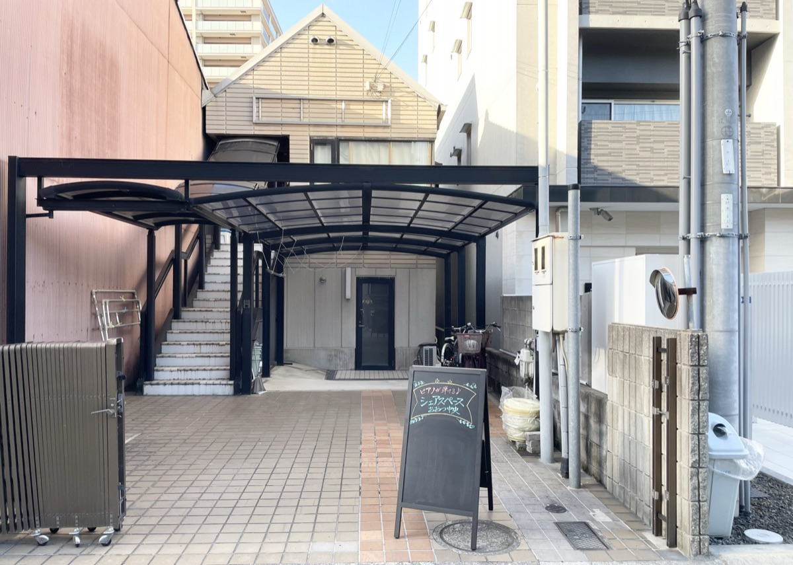
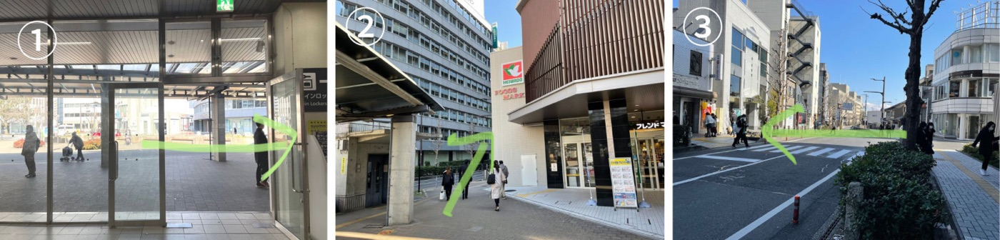
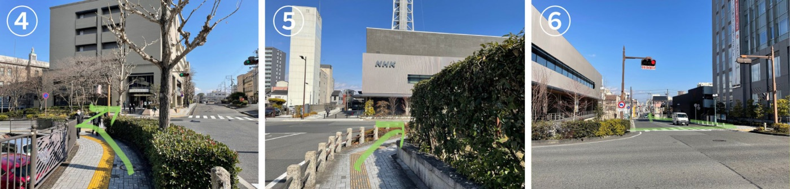
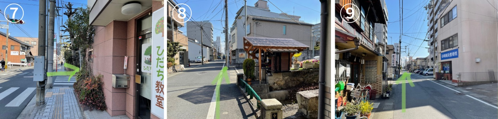
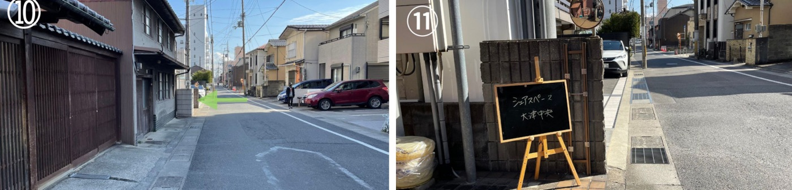

朝
通勤前のヨガ・ストレッチ
マットを広げて、出勤前のひと運動。ハンモックもあります。

マットを広げて、出勤前のひと運動。ハンモックもあります。

机6台・椅子20脚。施術ベッドやプロジェクターの貸出もあります。

ご利用は21時まで（夜間の延長は要相談）。ピアノは無料（ご利用はご予約時にお知らせください）。

スペース内での飲食は可能です。
電気ポットを使ってお茶を入れたり、
ちょっとした温めなども。
利用時間： 9:00〜21:00
2時間以上からご予約できます
※1〜3名での利用のみ、平日18:00〜21:00は、1時間のみのご利用も可能です
| ご利用人数 | 料金（1時間） | ピアノ |
|---|---|---|
| 1〜3名 | 1,650円 | レンタル無料 |
| 4〜20名 | 2,200円 | レンタル無料 |
駐車場2台あり（1台550円・事前にお知らせください）。
21時以降の夜間延長のご希望は、LINEでご相談ください。
カレンダーで「予定あり」になっている日時は、すでに埋まっています。
それ以外の日時のご予約・ご相談はLINEでどうぞ。

この黒板の看板が目印です




空き状況の確認・ご予約・使い方のご相談はLINEからどうぞ。
メッセージはオーナーだけが読めます。
メールの場合：sharespace.otsu@gmail.com